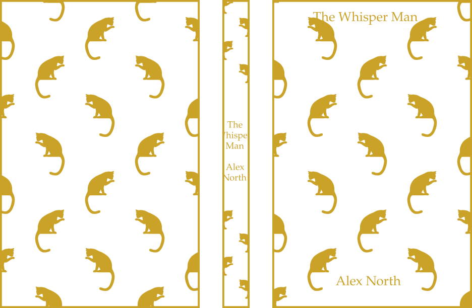

bookcover-js combined export — why it is not a print wrap
whisper-man-combined.svg: 936 × 612 px at 72 dpi. Panels are at x=0 (396 wide), x=441 (54 wide), x=540 (396 wide).
The 45 px gaps are shoulderGap + borderGap × 1.5; the outer 0.25 in cloth margin is omitted from the SVG.
Spine inner width is 54 px (0.75 in) even though the requested spine is 72 px (1 in), and the two 45 px gaps make the
central spine zone 144 px (2 in). Artwork cannot be continuous across this file.

Compare the individual panels in whisper-man-wrap.png. The spine text is clipped (“Whisper” / “North”).